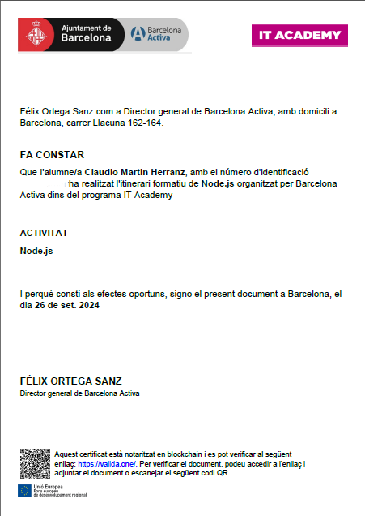
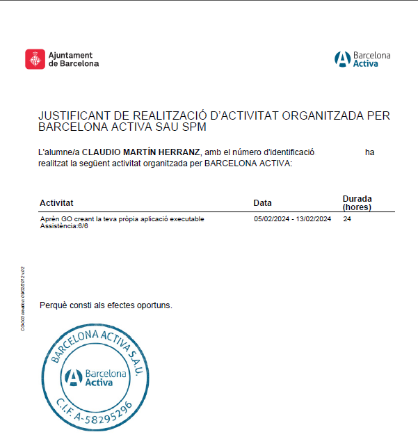
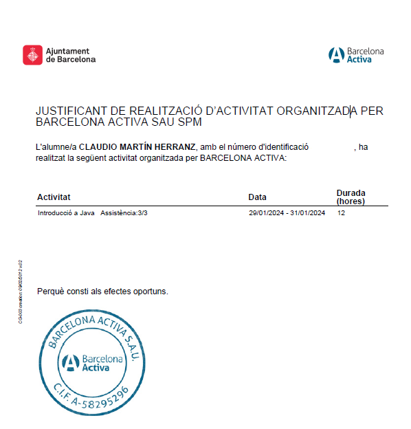
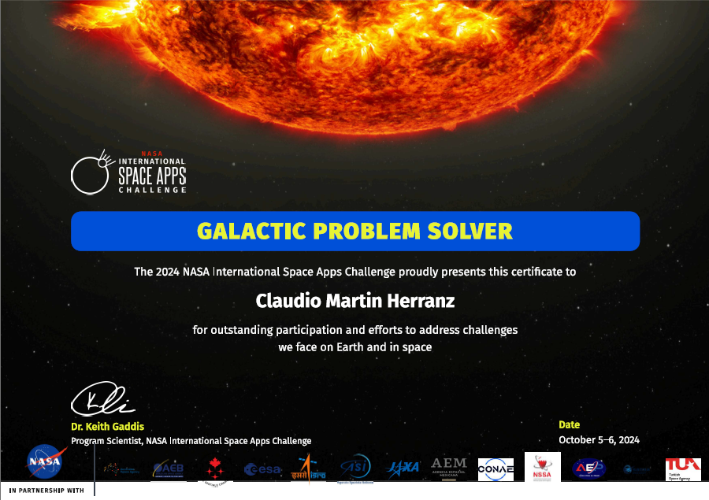

Claudio Martín Herranz - Desarrollador de Software
Sobre Mí Sobre Mí About Me
Soy un desarrollador de software apasionado por la tecnología, especializado en desarrollo web con Node.js, y con experiencia en diferentes tecnologías. Me encanta enfrentar nuevos desafíos y crecer con ellos. Tengo una gran capacidad de autoaprendizaje y disfruto conociendo a fondo todas las tecnologías que utilizo. Soc un desenvolupador de software apasionat per la tecnología, especializat en desenvolupament web amb Node.js, i amb experiència en diferents tecnologíes. M'encanta enfrentar nous desafíaments i creixer amb ells. Tinc una gran capacitat d'autoaprenentatge i gaudeixo coneixent a fons totes les tecnologíes que utilizo. I am a software developer passionate about technology, specialized in web development with Node.js, and experienced in various technologies. I love facing new challenges and growing with them. I have strong self-learning skills and enjoy getting to know in-depth all the technologies I work with.
Mis Habilidades Técnicas Habilitats Tècniques My Tech Stack
- Node.js
- Express
- Typescript
- JavaScript
- MongoDB
- SQL
- React
- Socket.io
- HTML
- CSS
- Git
Mis Aptitudes Les meves Aptituts My Soft Skills
Enfrentar desafíos y trabajar en proyectos en equipo es una habilidad que me aporta a la mejora de mi productividad y la creación de un ambiente de trabajo más colaborativo. Enfrentar desafíaments i treballar en projectes en equip és una habilitat que m'aporta a la millora de la meva productivitat i la creació d'un ambient de traball més col·laboratiu. Facing challenges and working on team projects is a skill that contributes to improving my productivity and creating a more collaborative work environment.
-
Liderazgo y trabajo en equipo
En mi extensa trayectoria como responsable de equipos en hostelería, he aprendido a la perfección lo que es tratar y acompañar a los compañeros para cumplir un objetivo común. Siempre he creído que un líder debe ser aquel que muestra el camino a su equipo, no el que se lo señala.
-
Compromiso
Ahondando en mi experiencia, siempre he demostrado un total compromiso con el puesto que ostentaba. Mi implicación es máxima.
-
Eficiencia
Siempre he destacado por identificar rápidamente potenciales problemas y ser capaz de prevenirlos con anticipación.
-
Empatía
Si bien cabe soy una persona exigente, conmigo mismo sobretodo. Aquello que hago, me gusta hacerlo siempre de la mejor manera. De la misma manera entiendo perfectamente que todos somos personas y podemos tener momentos más bajos.
-
Autoaprendizaje
Mi experiencia en ITAcademy, realizando primero el curso de Fundamentos de la Programación y posteriormente el Bootcamp de NodeJS, que son al estilo "up to you" me ha dotado de una capacidad de autoaprendizaje gracias a la cual soy capaz de conocer tecnologias e incorporarlas a mi Tech-Stack en poco tiempo y con buena capacidad para aplicarlas.
-
Lideratge i traball en equip
A la meva extensa trajectoria com a responsable d'equipos d'hostelería, he après a la perfecció el que es tractar i acompanyar els companys per a cumplir un objetiu comú. Sempre he cregut que un líder deu ser aquell que mostra el camí al su equip, no el que el senyala.
-
Compromis
Donada la meva experiència, sempre he demostrat un total compromis amb la categoria que ostentava. La meva implicació es màxima.
-
Eficiencia
Sempre he destacat per identificar ràpidament potencials problemes i he estat capaç de prevenir-los amb anticipació.
-
Empatía
Reconec que sóc una persona exigent, sobretot amb mi mateix. Allò que faig, m'agrada fer-ho sempre de la millor manera. De la mateixa manera entienc perfectamente que tods som persones i podem tenir moments més baixos.
-
Autoaprenentatge
La meva experiència a l'ITAcademy, realizant primer el curs de Fonaments de la Programació i posteriorment el Bootcamp de NodeJS, que son a l'estil "up to you" m'ha dotat d'una gran capacitat d'autoaprenentatge gracies a la qual soc capaç de conèixer tecnologies e incorporar-les al meu Tech-Stack en poc temps i amb bona capacitat per aplicar-les.
-
Leadership and Teamwork
In my extensive experience as a team leader in the hospitality industry, I have perfected the art of guiding and supporting colleagues to achieve a common goal. I have always believed that a leader should be one who shows the way to their team, not one who merely points it out.
-
Commitment
Throughout my experience, I have always demonstrated total commitment to the position I held. My involvement is always at its maximum.
-
Efficiency
I have always stood out for quickly identifying potential problems and being able to prevent them in advance.
-
Empathy
While I am a demanding person, especially with myself, and I like to do everything to the best of my ability, I also perfectly understand that we are all human and can have our low moments.
-
Self-learning
My experience at ITAcademy, first completing the Fundamentals of Programming course and then the NodeJS Bootcamp, which are in the "up to you" style, has given me a self-learning capacity. Thanks to this, I am able to learn new technologies and incorporate them into my Tech-Stack in a short time with a good ability to apply them.
Cursos y Certificaciones Cursos i Certificacions Courses and Certifications
-

Bootcamp de Node.js de ITAcademy Barcelona Activa Bootcamp de Node.js d'ITAcademy Barcelona Activa Node.js Bootcamp from ITAcademy Barcelona Activa -

Introducción a GoLang Introducció a GoLang GoLang First Approach -

Introducción a Java Introducció a Java Java First Approach -

NASA SpaceApps Challenge 2024 Hackathon NASA SpaceApps Challenge 2024 Hackathon NASA SpaceApps Challenge 2024 Hackathon
{kind=link}
{kind=link}
{kind=link}
{kind=link}
Proyectos Destacados Projectes Destacats Featured Projects
ChatApp ITAcademy - Chat en Tiempo Real ChatApp ITAcademy - Xat en Temps Real ChatApp ITAcademy - Real Time Chat
Aplicación de chat en tiempo real con Node.js, Express, MongoDB y Socket.IO Aplicació de xat en temps real amb Node.js, Express, MongoDB y Socket.IO Real-time chat application with Node.js, Express, MongoDB, and Socket.IO
Características principales:
- Mensajería en tiempo real con Socket.IO
- Autenticación segura con JWT y Google OAuth
- Persistencia de datos con MongoDB
- Interfaz de usuario con Bootstrap
- Buscador de usuarios y salas de chat
- Salas de chat públicas y privadas
- Implementación de debounce y throttle para optimización
- Carga de fotos de perfil con Multer
Característiques principals:
- Missatgeria en temps real amb Socket.IO
- Autenticació segura amb JWT i Google OAuth
- Persistencia de dades amb MongoDB
- Interfaç d'usuari amb Bootstrap
- Buscador d'usuaris i sales de xat
- Sales de xat públicques i privades
- Implementació de debounce y throttle per optimització
- Càrrega de fotos de perfil amb Multer
Main features:
- Real-time messaging with Socket.IO
- Secure authentication with JWT and Google OAuth
- Data persistence with MongoDB
- User interface with Bootstrap
- User and chat room search functionality
- Public and private chat rooms
- Implementation of debounce and throttle for optimization
- Profile picture upload with Multer
AppActivitats - Gestión de Actividades AppActivitats - Gestió d'Activitats AppActivitats - Activity Management
App de gestión de actividades con Node.js, Express y MongoDB App de gestió d'actividades amb Node.js, Express y MongoDB Activity management app with Node.js, Express, and MongoDB
Características principales:
- Backend desarrollado con Node.js y Express
- Base de datos MongoDB
- Registro y autenticación de usuarios
- Creación, edición y eliminación de actividades
- Inscripción y cancelación de participación en actividades
- Exportación e importación de actividades en formato JSON
- Implementación de middleware para seguridad (CORS, Helmet)
- Gestión de errores centralizada
Endpoints destacados:
- Gestión completa de usuarios (CRUD)
- Gestión completa de actividades
- Búsqueda de usuarios por nombre
- Unirse y abandonar actividades
- Descarga y carga de actividades en formato JSON
Característiques principals:
- Backend desenvolupat amb Node.js i Express
- Base de dades MongoDB
- Registre i autenticació d'usuaris
- Creació, edició i eliminació d'activitats
- Inscripció i cancel·lació de participació en activitats
- Exportació i importació d'activitats en format JSON
- Implementació de middleware per seguritat (CORS, Helmet)
- Gestió d'errors centralitzada
Endpoints destacats:
- Gestió completa d'usuaris (CRUD)
- Gestió completa d'activitates
- Cerca d'usuaris pel nom
- Unir-se i abandonar activitats
- Descàrrega i càrrea d'activitates en format JSON
Main features:
- Backend developed with Node.js and Express
- MongoDB database
- User registration and authentication
- Creation, editing, and deletion of activities
- Registration and cancellation of participation in activities
- Export and import of activities in JSON format
- Implementation of middleware for security (CORS, Helmet)
- Centralized error handling
Featured endpoints:
- Complete user management (CRUD)
- Complete activity management
- User search by name
- Join and leave activities
- Download and upload activities in JSON format